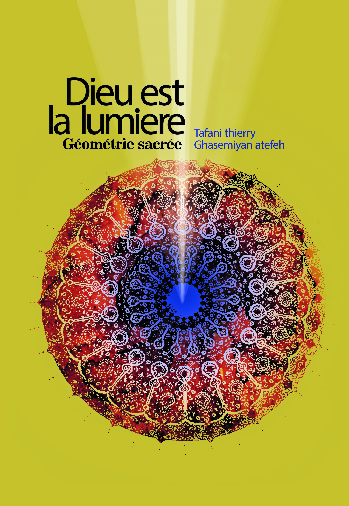

Lumière
La lumière comme principe révélateur, comme source de structure et comme langage du vivant.
Le livre
Ce livre constitue une base essentielle de l’univers Helios Astro. Il relie lumière, structure, symbole et géométrie dans une vision qui dépasse l’astrologie classique.

Dieu est la lumière, géométrie sacrée est bien plus qu’un livre de réflexion. Il pose les fondations d’une lecture du monde basée sur la lumière, la forme, la structure et la résonance symbolique.
Cette vision nourrit directement l’univers Helios Astro : mandalas, formes émergentes, roue zodiacale, lecture vibratoire et géométrie du sens.
La lumière comme principe révélateur, comme source de structure et comme langage du vivant.
La géométrie comme clé de lecture du réel, de l’ordre caché et des formes signifiantes.
Une vision qui entre en résonance avec les mandalas, les cartes et les thèmes Helios Astro.
“La lumière n’éclaire pas seulement. Elle structure, révèle et ordonne.”
Après la lecture du livre, tu peux prolonger cette vision à travers un thème astral, un transit sur 3 mois ou une révolution solaire dans l’univers Helios Astro.